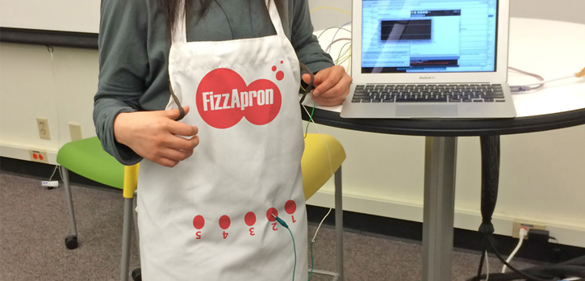

-

Dropnotes - A tangible user interface for music composition, which utilizes the combination of affordances of familiar objects (droplets, bottles, etc.) as metaphorical procedures to manipulate digital audio.
-

Trace - A mobile application that facilitates guided wandering rather than destination-oriented travel.
-

Papetto - A lightweight robotic arm that is attachable to anything (such as a phone) and moves according to face detection techniques in order to mirror facial movements.
-

FizzApron - FizzApron is a wearable computer which offers recipe instruction as auditory information. Everything is washable, so users don't feel guilty to manipulate it with unwashed hands while cooking!